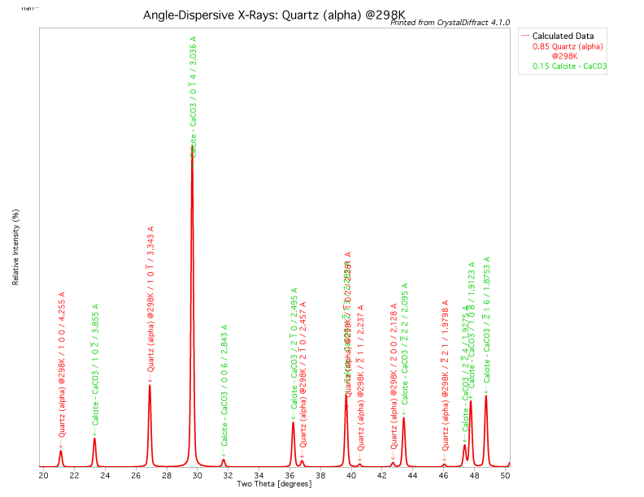

XRD data are sensitive to as many as 35 different factors. These factors can be grouped in to three general sources of "error".
The Debye-Scherrer Camera provides a visual aid for understanding the X-ray diffraction powder method.
The essential features of the powder method includes a narrow beam of monochromatic X-ray radiation impinging upon a randomly oriented powder where all possible crystallographic planes are available for Bragg reflection.
The Bragg-Bentono geometry allows for a constant distance between the sample and the detector.
It essentially requires that distance from the source to the sample and the sample to the detector (i.e., R1 = R2) and that the sample is kept on the tangent of the focusing circle.
In order to keep the detector distance constant the sample must rotate at 1/2 the angular velocity of the detector. As the angle of incidence (θ) changes, the detector must move 2θ. This is called 2:1 motion.
a. Axial alignment
b. Set take-off angle (6∞)
c. Zero alignment
d. Alignment of slits. The divergence slit limits the total irradiation area of the sample. The aperture of this slit hardly affects relative peak intensities if the slit is fixed and the specimen completely intercepts the X-ray beam. Sample mounts are typically hold material in 2.5 cm wide by 2.5 cm long holder.
The figure above shows both the theoretical and measured the relationship between sample irradiation length versus ∞2θ for several different divergence slits. Modern diffractometers radii range from 180 to 250 cm. Notice that for a 1∞ slit that a length of 2.5 cm is reached at 13∞ 2 θ. At lower angles the sample intercepts only part of the beam resulting in reduced beam intensity per unit area of sample surface and increases the likelihood of background scatter from the sample holder. At higher 2 θ angles less area irradiated, which would have an effect of decreasing diffraction intensity. The depth of penetration of the beam becomes commensurably deeper with higher angles. This effectively increases background as well as a sample displacement effect (see below). Theta compensating divergence slits on some diffractometers are designed to lessen high-angle intensity loss and displacement effects and low-angle background scattering. One must always recall however, that the standard form of reporting relative intensity is with fixed-slit conditions and that variable slit data must be appropriately corrected.
Five instrumental functions
1. X-ray source - Gaussian distribution for Kα1 radiation Early control choices of the operator are Kv and mA settings for the generator. Higher settings to increase peak (and background) intensity and counting statistics can be weighed against possible jeopardy to the tube.
2. Flat specimen error
3. Axial divergence
4. Penetration of the beam into the sample. (Sample transparency). The more intense the incident radiation, the farther the beam penetrates into the sample.
5. Receiving slit - Increasing the width of the receiving slit generally increases the peak height and width and decreases the ability to resolve peaks.
The net affect of instrument line profile modifications is to broaden and displace the theoretical line position to a lower theta angle. Kα2 radiation will displace observed lines to higher angles.
When the measured count rate is not directly proportional to the photon rate entering the detector, the detector response is non-linear and said to have deadtime. The effect is to increase the relative intensity of the weaker peaks. Most modern detectors (with calibration and computer correction) handle count rates up to 100,000 counts per second (cps). A quick check to determine if the detector not responding in a linear fashion is to measure the intensity of the strongest line with the tube current set for the normal quantitation. Perform the measurement a second time at half the tube current. If the second measurement is more than half the first then detector deadtime is the probable cause. In this latter case the detector correction routing must be recalibrated or the observed data must be corrected accordingly.
Counting Statistics
The precision of intensity data can be limited more by counting statistics than any other single parameter except preferred orientation. The figure below illustrates how the probable error of peak intensity measurements can vary with both the total number of counts and the ratio of the peak to background counting rate (R).
Both the total number of counts and R depend upon scan rate and chopper increment. For a chopper increment of 0.01∞ and scan rate of 2∞ 2θ min-1, the count time per increment is only 0.3 s. If the counting rate at the peak top is 1000 cps, then the total number of counts is 300. If R is large, then the best precision attainable is about +5%. If R is 1.5, then probable error exceeds +10%. By decreasing the scan rate of 0.2∞ 2θ min-1, probable error drops to +4%.
Further improvement in peak intensity precision is possible by smoothing over the peak top in small increments and also averaging background over hundreds of increments on both sides of a peak.
Sample displacement
Displacement of the sample off the diffractometer focusing circle can be brought about in three ways. Firstly, there is instrumental misalignment. Often neglected is the tacit assumption that the goniometer is properly aligned before any experiment is run. This can be easily maintained with a proper alignment using manufacturer provided tools and checking with a standard material such as the U.S. National Institute of Standards and Technology Reference Materials.
If the sample holder is properly aligned then the second potential source of displacement error comes from way the sample itself is packed into the sample holder (see next section).The figure below shows the changes in measured d-spacings for a series of reflections as a function of displacement from the goniometer focal plane.

Displacement error increases rapidly as 2θ falls below 20∞ as see in the figure below.
Equally important is the decrease in diffraction intensity with increasing displacement. Finally, effective displacement or sample transparency can be a consequence of a low mass absorption coefficient (µ) or high sample porosity (see next section).
Background
Background can be produced from a number of sources. These include:
Peak fitting procedures typically need to consider removal of background. Without correction for the background much of the trace is fit with nonsensical peaks that do not provide a unique solution Most all XRD manufacturers provide peak fitting software to allow this procedure.
The figure above demonstrates a single peak fitting approach. The form of the fit is:
Intensity = baseline + Kα1
Gaussian (peak ht. and width)
+ Kα2 Gaussian
(peak ht. and width).
Specimen sensitive errors are most commonly introduced while preparing the sample for presentation to the X-ray beam. Itemized below are the most profound parameters related to preparation and mounting of powder.
1. Coherent scattering domain.
It is possible to calculate the diffraction pattern (i.e., interference pattern) for any given crystal structure given:
Under ideal conditions all the diffraction takes place at the Bragg angles of reflection.
Diffraction effects (in one dimension) due to scattering from a grating can be described by an interference function:
where:
This relationship is shown graphically in the figure below.
Excessive grinding of a sample, during preparation can induce defects in the crystal structure and reduce coherent scattering intensity.
2. Preferred orientation
The XRD powder method relies on principle that all possible crystallographic orientations are presented to the beam. This concept is known a random orientation. If there is a bias of orientations of one or more particular crystallographic plane, then this is known a preferred orientation. Preferred orientation is likely the most common cause of intensity variations in XRD powder experiments.
Particles with perfect cleavage or acicular shapes, such as clay minerals, are the most prone to preferred orientation. Intensity variations up to 100% are possible. Here are some tips to minimize the effects of preferred orientation.
a. Be consistent with sample mounting and packing methods. Sprinkling and backpacking may reduce preferred orientation. Apply a constant pressure (e.g. 200 psi for 20 s).
b. Reduce the particle size of the material to about 5 to 10 µm. This also minimized primary and secondary extinction effects. Using a wet grinding method reduces defects.
c. Mix the sample with 20% internal standard. Pick an internal standard that has equant particles and that does not interfere with the peaks of interest.
d. Slurry mounting with acetone can minimized preferred orientation. Water is a polar compound, where as acetone is less polar and it evaporates quickly. If particles are kept away from each other while drying, then van der waal forces will not let them to attract to each other and self align. The pitfall of slurry mounting is that the sample may be too thin (see below).
3. Powder thickness and transparency
The thickness of the powder should be great enough to prevent the beam from passing through to the substrate below. The generally accepted reduction of the beam intensity is about 1/1000th of the initial beam intensity. This condition is termed "infinite thickness".
Examples of powder thickness (µm) required for attenuation of a CuKa beam to 0.01 and 0.001 times incident intensity as a function of 2θ.
Factors that influence the transparency of a specimen include:
Kα2 stripping.
At low angles of 2θ, Kα1 and Kα2 peaks are closely overlapped. There are computer programs that will mathematically remove the Kα2 peak component. They use relationships between Kα1 and Kα2 radiation (1.54051≈ and 1.54433≈, respectively) via Braggís law and the assumption that the Kα1 peak intensity is double the Kα2 peak. The net intensity of stripped data is therefore one-third the observed intensity.
Here's a list of commonly
used radiation source wavelengths. Here is a list of all energies.
Peak finding.
There are various degrees of sophistication for determining peak properties. In increasing order of time and effort are as follows:
1. Graphically picking peak intensity and positions with a cursor on the computer screen or print out the peak and use a ruler.
2. Second-derivative peak finding routine. The first derivative of a peak gives the peak position and the second derivative gives the peak width.
3. Profile fitting. There are several models that can be used to fit peak data. A good reference is by Howard, S.A. and K.D. Preston (1989) Profile fitting of powder diffraction patterns. in Modern Powder Diffraction eds. D.L. Bish and J.E. Post, Reviews in Mineralogy, v. 20, p. 215-275.
4. Rietveld refinement. This is a full pattern approach (beyond the scope of these course notes). See Post, J.E. and D.L. Bish (1989) Rietveld refinement of crystal structures using powder X-ray diffraction data. in Modern Powder Diffraction eds. D.L. Bish and J.E. Post, Reviews in Mineralogy, v. 20, p. 277-308.
There is a tacit assumption
often made by peak finding programs, which the method to determine peak
shapes, for example that the shape of the peak is
Gaussian. This is not always the case, as noted above by the
non-symmetrical instrument distortions that result from
factors such as flat specimen, transparency, and displacement
errors. There are a variety of peak shape models to
choose from that one can use to peak fit. Here's a table of commonly used
functions.
Your choice of peak fitting
method depends on the use of your fitted parameters. Ask
yourself any of the questions below.
1. Are you doing a quick
search and match to roughly identfy something you have no idea
of what it is?
2. Are you indexing a known mineral?
3. Are you refining the lattice parameters of a mineral?
4. Are you conducting a quantitative analysis?
5. Are looking for solid-solution analysis?
6. Are you evaluating order/disorder?
7. Are you evaluating crystallinity
using an index (e.g., Scherrer,
Hinckely, Kubler,
Opal)?
8. Are you evaluating lattice strain (isotopic or anisotropic)?
Calibration/correction.
NIST
SRM640b Silicon metal, SRM675 synthetic fluoro-phlogopite and more...
Δ2θ = practical d-value - observed d-value
Correction to the sample peak position is by simple linear interpolation.
What do you do once you have the d's and I's ?
Introduction to the Joint Committee Powder Diffraction Standards data base.
Now called the International Centre for Diffraction Data - Powder Diffraction Files (PDF)
Diffraction data is also now available from the Mineralogical Society of America Crystal Structure database
Each phase in the data base is listed by chemical name and permutations of the name:
Chemical Name: /mineral chemical formula Strongest 2nd 3rd PDF #
iron carbonate:/ Siderite FeCO3 2.80x 1.734 1.743 29-696
carbonate iron:/ Siderite FeCO3 2.80x 1.734 1.743 29-696
What if the sample is a mixture?
Example: Beach sand, you think it is composed of quartz.
Observed Card #33-1161 Residual Card #5-628
d≈ Irel d≈ Irel +Δd≈ d≈ Irel +Δd
4.26 30 4.26 35 0.000
3.345 100 3.343 100 0.002
3.260 5 3.260 5 (11) 3.258 13 0.002
2.822 45 2.822 45 (100) 2.821 100 0.001
2.459 12 2.458 12 0.001
2.283 14 2.282 12 0.001 2.283 2(4)
There are no rules when it comes to identifying an
unknown! Use any and all information you can gather.
Don't be to proud to ask the person who gave you the sample some
questions about its origin. Remember to use some of the simple
tests, such as dilute (5% HCl) acid fizzing, streak plates,
specific gravity, magnetic properties, or hardness. Independent methods such as XRF,
ICP, EDS elemental analyses, FTIR, Raman, and thermal TGA or DSC
data can always help constrain the identification process.
In the case of beach sand above, there is a
residual. Common sense tells you that shells are often found on
the beach, so therefore why not go directly to the card for
calcite or aragonite and consider them as a possibility? The
residual turns out to be calcite.

Hanawalt "grouping" is based upon the d-spacings of the strongest lines in the pattern.
The lines are arranged as follows:
where, A, B, C...H are the eight strongest
lines in descending order.
The entire file is then arranged into 40 groups based upon ranges of d(≈).
999.99 - 10.00
Fink "grouping" is based upon the eight strongest lines in the pattern.
Works better than Hanawalt method when;
There are four entries for each pattern, each starting with one of the four most intense lines.
The remaining seven lines in each entry are arranged in descending order of d-value.
Example: Lines ordered in terms of descending d-values (bold four most intense).
The permutations then become:
Like the Hanawalt system the entire file is then arranged into approximately equal size groups based upon ranges of d(≈).
999.99 - 10.00Within each group entries are listed in descending order of the second d-value.
Criteria for a match.
The tolerance for a possible window in d is related to the following factors:
Accuracy is achieved by the appropriate calibrations and corrections (i.e., internal standard corrections).
If you expect additional variations due to
solid solution substitutions (i.e., a change in fn and fx,
fy, fz).
Error windows for d-values:
|
|
|
||||
|
|
∞2θ(CuKa) |
|
|
|
|
| 20.0 |
4.4 | 0.080 |
0.1 |
0.020 |
0.04 |
| 5.0 | 17.7 | 0.030 | 0.1 | 0.010 | 0.04 |
| 3.0 | 29.8 | 0.010 | 0.1 | 0.003 | 0.04 |
| 1.5 | 61.8 | 0.003 | 0.1 | 0.001 | 0.04 |
{kind=link}